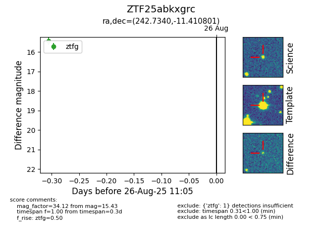

Target ZTF25abkxgrc at 2025-08-26 13:00, see:
FINK: fink-portal.org/ZTF25abkxgrc
Lasair: lasair-ztf.lsst.ac.uk/objects/ZTF25abkxgrc
ALeRCE: alerce.online/object/ZTF25abkxgrc
alt names
ZTF25abkxgrc (ztf,fink)
coordinates:
equatorial (ra, dec) = (242.7340,-11.41080)
galactic (l, b) = (1.1645,+28.16517)
photometry
last atlaso=18.45, ztfg=15.43
1 atlaso, 1 ztfg detections
